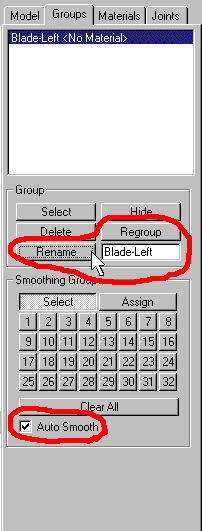
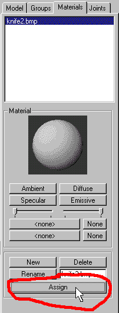

|
|
Now you will rename the material to something that will fit what we are trying to model.Double click in the text box area that presently says "Material01" and type in what will make more sense: "Knife2.bmp". (See figure 1.20). This will be the material that we will be getting next.

Figure 1.20 Renaming the material
We will have to find where our bmp of the knife2 is. You should put them in the directory where the model is being built or in a subdirectory of the models directory that you have chosen to use. Another thing you will have to keep in mind if you are going to make the skin yourself, is that HL models have to be a 256, 8 bit indexed color bmp format, and it has to be a power of 16. So the smallest bmp you can have would be a 16x16 bmp file. The largest file would be a 256x256 bmp for the reasons that most video cards work in powers of 2 up to 256x256 memory blocks. This was inherited by the Quake engine that Half Life licensed and highly modified for the game play.
To get the material, I have put it in the same directory as the Ms3d file that I am working with. Oh! did I save it as often as you can because of freaking things that happen when your working on a computer, such as Fido coming along and chomping on your power cord to the computer and dying, then you have to take time to bury him and then you lost the blankity blank file! Make backups as well, especially when you are getting ready to make a major change to your work, so you will have something to go back to, in case of a mess!
Nuff said about that. click the first "None" button in the Material section of the "Material" rollout. (See figure 1.21).

Figure 1.21 Importing the material
Select the knife2.bmp file and it will put it into the knife2.bmp material. If you want to have some fun, click and hold the mouse button on the Material sphere and drag it around to see it as it would be applied to a sphere!
We are now going to apply this material to the knife blade that we have just made, or rather one side of it. You will have to switch back to the "Model" rollout, and click on the "Select" button and click on the "Face" button in the "Select Options" portion of the rollout. Drag your mouse across all the faces to select them all, or you can use the "Edit->Select All" on the menu selections.
Now we need to make a group of the selected faces so that it will be easier to select when we start to make other portions of the knife. We do this so we can hide portions of a model so that we can best work with a area of a model such as in the case of "Skinning" a model or texture mapping the faces in a group. Click on the "Groups" tab of the rollouts and click the "Regroup" Button to create or regroup all the selected faces. (See figure 1.22). You will notice in Figure 1.22 that we have the "Auto Smooth" option checked, as it should be. Smoothing a Group will make the rough edges of the poly "faces" appear to blend instead of being razor sharp. Something a character model does not need or most weapons, e.g. a gun barrel or a persons face. You will be renaming this new group to "Blade-Left" the same way that you renamed the material in the "Material" rollout section.

Figure 1.22 Regrouping and Renaming the Group
To do this you will now have to switch back to the "Material" rollout. Next make sure that the "Knife2.bmp" is highlighted in the material list box and click on the "Assign" button as show in Figure 1.23.

Figure 1.23 Assigning a Material to the Group
|
|